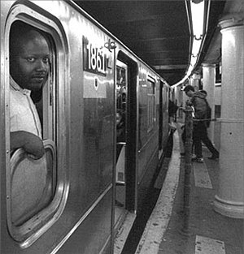

Subway Automation Threatens Jobs and Safety
Submitted on Sat, 08/20/2005 - 11:00pm
Disclaimer - The following article is reposted here because it is an issue with some relevance to the IWW. The views of the author and the publisher do not necessarily agree with those of the IWW and vice versa.
 by William Johnson - Labor Notes, August 2005
Automation is transforming working conditions for the thousands of union members who keep the New York subways running. On June 19, the system’s “L” line between Brooklyn and Manhattan began running trains without conductors, leaving train operators as the only crew on board.
Currently, One-Person Train Operation (OPTO) is functioning on the L only during weekends and after midnight, but train operator Tim Schermerhorn believes that once New York’s Metropolitan Transportation Authority (MTA) has gotten the kinks out, “they won’t use conductors at all.”
Aside from costing workers nearly 3,000 jobs, Schermerhorn says, the elimination of conductors will make shop floor organizing more difficult. “Fight-back has to be organized on the ground,” he explains. “If there’s fewer workers, there’ll be less contact [between workers] on the ground.”
Train operator Steve Downs agrees that the union will be hit hard, and notes that conductorless trains are only the beginning of the MTA’s push toward Communications-Based Train Control (CBTC). Within the next year, the MTA plans to start running the trains by computer.
MINDING THE MACHINES
Downs, a longtime member of Transport Workers Union Local 100, explains that on computer-operated trains, “the train operator will basically become a machine-minder. Their job will be to stay awake and push a button every 20 seconds to prove that they’re awake.” Schermerhorn says, “The train operator will essentially be there in case something goes wrong.”
With one-person crews, safety concerns for both crew and passengers are obvious. In emergencies, conductors are essential for evacuating passengers. Says Downs, “[The MTA] is keeping their fingers crossed that there will never be an incident where they’ll have to evacuate passengers from smoke-filled trains. If that happens, it would probably result in injuries, possibly fatalities.”
The MTA ran a drill in April to test train evacuation with a single-person crew. The drill (which involved only 100 riders—about one-tenth the normal passenger load on an L train) was aborted prematurely because of problems that, observers said, would likely have led to many deaths in a real emergency.
In light of the recent subway bombing in London, one might expect the MTA to rethink one-person crews, but so far, management has given no such indication.
“The MTA cannot guarantee that there won’t be bombings, blackouts, fires, or floods in the subway,” says Downs. “They’re basically banking on anything like that happening far enough in the future that people won’t think to blame this on new technology and job cuts, when passengers are injured or killed during evacuations.”
SPEED-UP
In everyday operations, conductors make sure that passengers get on and off the trains safely, checking that no one gets caught in the doors and dragged. Before pulling out of a station, they are required to check a closed-circuit video system that monitors the platform’s edges, and they must also lower their windows and scan the platform.
But one of the MTA’s rationales for the move toward CBTC is that it will let managers cut the time between trains. Under OPTO, train operators will be required to follow the same steps that conductors did before leaving the station—but they will be encouraged to cut corners and hurry out of the station.
An anonymous L train operator told Newsday, “[The MTA is] trying desperately to cut the running times.” He noted that conductorless trains will have to run slower “if the train operator performs the way he was taught to operate. If he wants to take shortcuts and not open the window to observe the platforms, he might get away with it.”
WORKPLACE CONTROL
A consequence of CBTC, observes Downs, will be that “the control workers have over their working conditions is reduced.” On CBTC trains, speed will be tightly controlled by the computer system, eliminating the possibility of job actions such as slowdowns.Schermerhorn notes, however, that “even with a new system installed, it must have weaknesses. As soon as we had new equipment coming in, the union should have had an interdepartmental meeting where we explored the weaknesses of the new trains.”
Instead of this type of strategic response, Schermerhorn says the TWU 100 leadership has done little besides a leafleting campaign targeting subway riders. “A campaign with the riding public is okay,” he says, “but it needs to be a support to the fight-back we wage. This campaign seems to be a substitute for fight-back.”
Downs notes that the local, led by President Roger Toussaint, is focusing exclusively on passenger and worker safety in its campaign. Since most of the city is not serviced by conductorless trains, says Downs, safety concerns around OPTO are not yet felt city-wide.
NO COMMENT ON JOB LOSS
“[Union leaders] made a conscious choice not to talk about jobs,” Downs says. “Especially in a city where these kinds of jobs are a source of employment for immigrants, Black workers, Puerto Rican workers, they should have said, ‘There are potentially 3,000 jobs being lost.’ That’s the kind of thing where there’s at least potential to have a city-wide response.” Subway jobs—which are awarded based on civil service exam scores—are filled predominantly by workers of color.
Downs thinks job actions should have been called: “The TWU leadership should have taken the position early on that, ‘It’s so unsafe to run these trains without a two-person crew, we won’t do it.’ That would have been much harder, but they should have organized among train operators and the public so that on the day MTA started these trains, they wouldn’t move.”
Downs, who ran for executive board on a slate opposing Toussaint for the presidency in 2003, believes the leadership’s response has been “consistent with the local’s approach over the last two or three years—they mobilize people to talk with legislators. To the extent that they’ve talked with membership, it’s been, ‘Come help us hand out leaflets,’ not, ‘Let’s keep these trains from running.’”
Conductors and train operators are not the only transit workers affected by new technology. In Local 100’s car equipment division, the workers who now repair subway cars may soon be phased out.
According to inspector Naomi Allen, the new subway cars compatible with CBTC technology are almost entirely electronic, and car equipment workers are not trained in electronics.
So, says Allen, the MTA has created a new job title—transit rail car specialist—that will eventually do all subway car maintenance, and Local 100 members who currently do the job will have to go through the same job application process as everyone else.
“There’s no path to promotion, no training program,” she explains. “And the fleet will change rapidly—every month we’re getting new cars.” She adds that since the union gave up its no-layoff clause in the last contract negotiations, car maintenance workers may be left out to dry.
MEMBER FRUSTRATIONS
Local 100’s contract expires this winter and Allen, Downs, and Schermerhorn want the local to make the new technologies an issue to mobilize members around.
Schermerhorn says that some members have supported small-scale job actions, indicating their frustration with working conditions and the union’s failure to address them.
“Pronouncements from the union hall are a good thing,” he says, “but that doesn’t teach people how to fight, doesn’t put people in communication with each other, doesn’t give them the self-confidence they need to fight.” In order to challenge OPTO and automation, leaders will have to “go out and build networks in the field.”